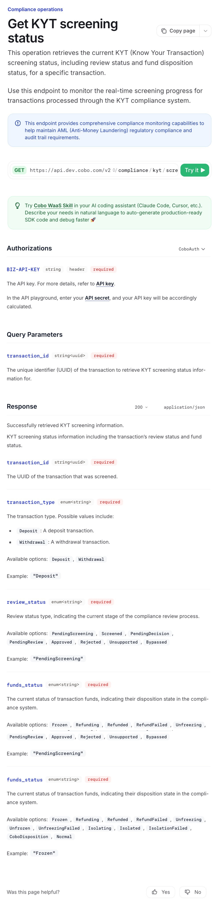
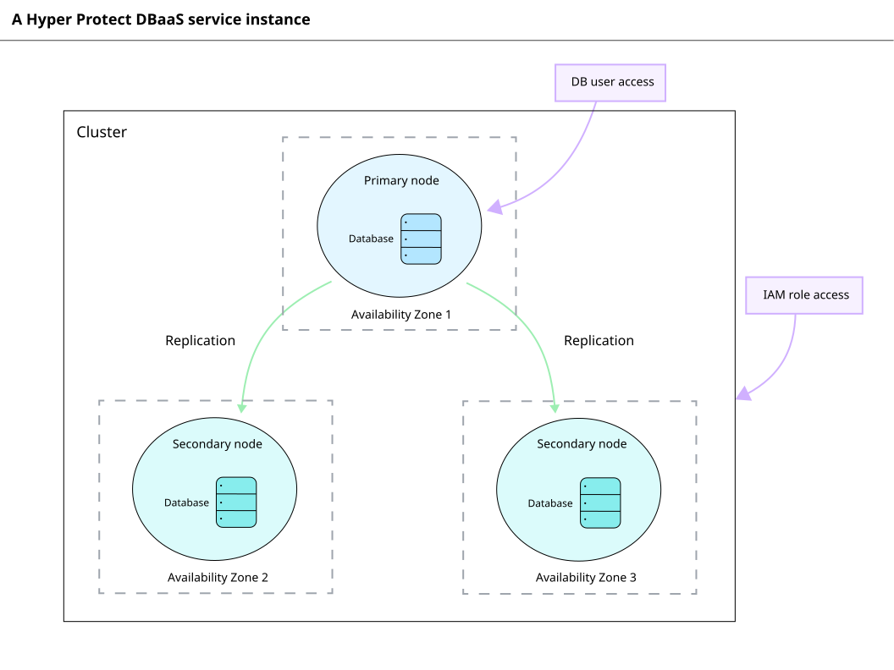
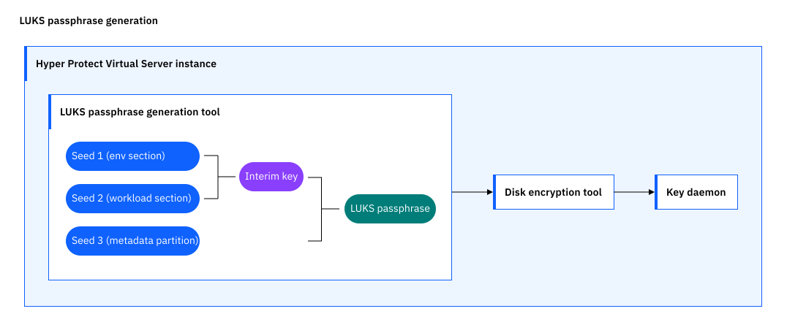
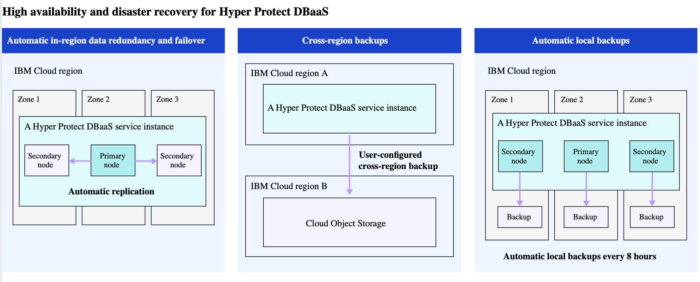

Hi, I'm Liyuan — you can also call me Caroline. I'm a technical writer with nearly 7 years of experience turning dense engineering concepts into clear words or visuals.
I care a lot about making things look good and flow smoothly, so that the experience feels effortless. It's the kind of detail work most people find tedious, but I genuinely enjoy.
Chinese (native)English (TEM-8, CATTI Level 2 translation)Japanese (JLPT N1)French (beginner)
Experience
Where I've worked
07/2024 — 01/2026
Cobo
Technical Writer
Products: cryptocurrency wallets, web apps, and AI desktop apps
Wrote and published in Markdown via GitHub on fast-paced 1–2-week release cycles
Wrote in-product copy through Figma designs and sandbox walkthroughs, and built UX writing style guides
Leveraged AI for content generation and optimization such as automating changelogs
Produced multimedia content including diagrams, explainer and demo videos, and whitepapers
04/2019 — 06/2023
IBM
Content Designer
Products: enterprise cloud databases, key management services, and virtual servers
Wrote and published in Markdown via GitHub and partly in DITA, within standardized monthly release processes
Drove content optimization using Google Analytics and Hotjar data, user interviews, and A/B testing
Collaborated cross-functionally on marketing pages, blogs, presentations, product brochures, and videos
06/2017 — 06/2018
SAP
Technical Writer (Intern)
Worked on solution documentation and DITA CMS
Contributed to content structure optimization and versioning work
Learned the full enterprise documentation workflow
Work samples
Things I've made
Due to NDAs, the samples below are excerpts rather than complete documents, meant to give you a general idea of my work.
Note: The samples have been reformatted for this portfolio and may be missing context, hyperlinks, and interactive elements from the original. As a result, they may not read as smoothly as they do in their original publishing environment.
Introduction to Web3 Wallets
Learn about Cobo Portal's Web3 Wallets, a secure solution for managing digital assets with advanced security and compliance features.
Key features
Full support for on-chain interaction
Fully custodial with secure key management
Clear and flexible address-level control
01
Documentation
Concept
This documentation helps users understand what Web3 Wallets are, their key features, and how they compare to Asset Wallets.
Cobo Portal onboarding agents
Learn how Cobo Portal onboarding agents (a set of AI agents invoked by the Cobo AI Assistant during onboarding) guide you through key configurations and your first transaction in the right order.
Beta: Cobo AI features are currently in Beta and available only to selected test users so we can gather feedback and keep improving the experience.
What are onboarding agents?
Onboarding agents are a group of collaborating agents invoked by the Cobo AI Assistant during new-user onboarding.
02
Documentation
Task (getting started)
This documentation first explains what onboarding agents are, target users and scenarios, and then how to use them.
Why is my virtual server functionality disrupted?
What's happening
Your virtual server functionality is disrupted.
Why it's happening
Multiple data volumes or workloads are attached. Currently, only a single data volume and a single workload are supported.
How to fix it
Attach only a single data volume and workload
03
Documentation
Troubleshooting
This documentation is written from the user's perspective to help diagnose and resolve virtual server issues.

04
Documentation
API reference
This documentation helps developers retrieve KYT screening status with clear query parameters and response examples.
v1.28.0
Released on December 17, 2025
Compatibility Changes
Added the int64 format to the used_nonce field in the TransactionRawTxInfo schema.
New Features
Expand Babylon BTC staking
Improvements
Added support for Cosmos contracts in the Call smart contract operation.
05
Documentation
Changelog
This documentation helps users learn what key changes are in this release at a glance.

06
Diagram
Components of a database service instance
The diagram explains to new users relationship between cluster, node, and database and different levels of access.

07
Diagram
Passphrase generation process
Quick overview of the complex passphrase generation process.

08
Diagram
HA/DR capabilities
The diagram helps users understand the complex HA/DR capabilities more straightforwardly.
09
Video
Persona
Incorporating characters and storytelling focused on problem-solving within target industries makes the video more relatable for potential clients.
10
Video
Data
Alongside designed personas and use case stories, data from studies is often used to strengthen the case. This clip is from the beginning of a video promoting a data protection service.
11
Video
Explainer
Explainer videos help viewers understand complex concepts more straightforwardly.
12
Video
Animated diagram
Animated diagrams in videos make it easier for users to understand how components interact and where they are located.
13
Video
Demo
A demo clip from a video showcasing how to use MCP servers to build an app, with a clear table of contents and full-screen transitions to separate major steps, plus callouts for small details.
Need help with content?
I'm open to freelance projects, full-time roles, and collaborations. The quickest way to reach me is email.
This concept topic explains what Web3 Wallets are, their key features, and how they compare to Asset Wallets.
Introduction to Web3 Wallets
Learn about Cobo Portal’s Web3 Wallets, a secure solution for managing digital assets with advanced security and compliance features.
Web3 Wallets are a sub-wallet type of Custodial Wallets designed for interacting with the Web3 ecosystem, including DeFi, NFTs, and dApps. With Web3 Wallets, you can perform smart contract calls, asset approvals, and message signing, without managing private keys or deploying infrastructure.
Unlike Asset Wallets, which focus on centralized fund management, Web3 Wallets allow you to independently control each address. You can explicitly specify the source address for each transaction or interaction, giving you greater flexibility and clarity.
You can access Web3 Wallets through the Cobo Portal web interface or via WaaS 2.0 API. You can also use the Cobo Connect browser extension to securely connect your wallets to dApps and perform on-chain actions.
Key features
Full support for on-chain interaction
Use your Web3 Wallets to securely perform contract calls, message signing, and asset approvals. These features are ideal for engaging with DeFi strategies, NFT marketplaces, and dApp authentication.
Fully custodial with secure key management
You don't need to manage private keys yourself. Cobo ensures keys cannot be exported and uses multiple layers of security to safeguard your assets. Even in cases of accidental approvals, the impact is limited to the affected address.
Clear and flexible address-level control
You can specify the source address for each action, which improves operational clarity, asset isolation, and audit readiness.
Flexible fee handling
You can customize gas fees, or enable Fee Station to centralize gas payments and simplify operations.
Seamless dApp integration
You can integrate Web3 Wallets into dApps using Cobo Connect or WaaS 2.0 API. This provides a secure and convenient way to interact with Web3 applications without exposing your private keys.
Web3 Wallets vs. Asset Wallets
Key differences between Web3 Wallets and Asset Wallets are as follows:
Category
Web3 Wallets
Asset Wallets
Use cases
Suitable for interacting with DeFi, NFTs, and dApps
Designed for centralized asset storage and routine transfers
Address usage
Each address operates independently; you can select the source address as needed
Source addresses are centrally assigned by the system
Disabled by default; you need to enable it manually
Enabled by default
Fee handling
Customize gas fees and use Fee Station
Fees calculated and handled by Cobo
Access methods
Cobo Portal, WaaS 2.0 API, browser extension
Cobo Portal, WaaS 2.0 API
Token support
Includes all tokens supported by Asset Wallets, plus more ERC-20 tokens via Cobo Connect
Fixed list
Web3 Wallets vs. MPC Wallets
In practice, Web3 Wallets and MPC Wallets support most of the same features, and their capabilities for asset transfer and management are largely equivalent. The main differences are summarized below:
Category
Web3 Wallets
MPC Wallets
Use cases
Web3 operations without key custody
Advanced custody scenarios that require higher control
Key ownership
Fully managed by Cobo
Users hold private key shares in a distributed model
This getting started guide explains what onboarding agents are, who they're for, and how to use them.
Cobo Portal onboarding agents
Cobo AI features are currently in Beta and available only to selected test users so we can gather feedback and keep improving the experience. If you are interested in trying Cobo AI, contact Cobo Support to request access. After access is granted, you will see the Cobo AI entry points in the relevant product interfaces and can start using them.
Learn how Cobo Portal onboarding agents (a set of AI agents invoked by the Cobo AI Assistant during onboarding) guide you through key configurations and your first transaction in the right order.
What are Cobo Portal onboarding agents?
Onboarding agents are a group of collaborating agents invoked by the Cobo AI Assistant during new-user onboarding. They continuously detect your configuration progress and system status, provide clear step-by-step guidance, progress updates, and explanations, and help you complete the essential onboarding steps smoothly.
Onboarding agents will suggest the right steps but will not automatically advance critical processes. They act as an on-demand onboarding helper.
What is an agent? An agent is an intelligent tool the AI assistant automatically invokes for a specific task scenario. Different agents handle different types of tasks.
Target users and scenarios
Onboarding agents are designed for free-trial teams created through self-service registration. Team members have not completed the onboarding flow yet and need to use MPC Wallets. Typical target users include:
Newly created organization admins who need to configure wallets and invite members
Team members using Cobo Portal for the first time who need to set up Portal Mobile and other security configurations
Team members who need to revisit or finish key configurations
Users who are unsure which operations are available in their current state or what to do next
Tasks they can help with
Onboarding agents work together to help with the following tasks:
Answer common questions about Cobo products and configuration flows by referencing product documentation
Guide new MPC Wallet users through the onboarding checklist, including:
Downloading Portal Mobile and linking their device
Inviting organization members and assigning user roles
Setting up MPC Wallets, such as creating Vaults, creating the Main Key, creating and backing up key shares, and creating wallets
Explain the meaning of your organization’s risk-control policies
Guide you through deposit and withdrawal flows and highlight related operations and precautions
During a conversation, you might see different agents being invoked. This indicates which agent is handling the current task — for example, the Member Invitation Agent handles member invitations, while the Portal Mobile Setup Agent guides the Portal Mobile setup. These agents switch and collaborate as needed; you do not need to switch them manually.
How to use
After signing up and logging in to Cobo Portal, click the AI icon in the top-right corner to open the AI Assistant. For eligible new users, the Cobo AI Assistant invokes the onboarding agents to interact with you in a conversational, staged way.
The system fetches your current configuration status and provides relevant guidance, helping you complete setups and operations. You can ask questions or describe your goal in natural language, and the Cobo AI Assistant will respond based on the current context.
For more information about Cobo AI, including overview, data use and security, and capability boundaries, see Cobo AI Introduction.
Troubleshooting topic
This troubleshooting topic is written from the user's perspective to help diagnose and resolve virtual server issues.
Why is my virtual server functionality disrupted?
What's happening
Your virtual server functionality is disrupted.
Why it's happening
Multiple data volumes or workloads are attached. Currently, only a single data volume and a single workload are supported.
How to fix it
Attach only a single data volume and workload.
Ensure the contract is mandatory and correctly configured.
API reference
This API reference helps developers retrieve KYT screening status with clear query parameters and response examples.
Get KYT screening status
Changelog
This changelog helps users learn what key changes are in this release at a glance.
v1.28.0
This version was released on December 17, 2025.
Compatibility Changes
Added the int64 format to the used_nonce field in the TransactionRawTxInfo schema.
New Features
Added a new staking operation to support expanding Babylon BTC staking to the next phase:
Expand Babylon BTC staking
Improvements
Added support for Cosmos contracts in the Call smart contract operation.
Diagram
The diagram explains to new users the relationship between cluster, node, and database, and the different levels of access.
Components of a database service instance
Diagram
The diagram provides a quick overview of the complex passphrase generation process.
Passphrase generation process
Diagram
The diagram helps users understand the complex HA/DR capabilities more straightforwardly.